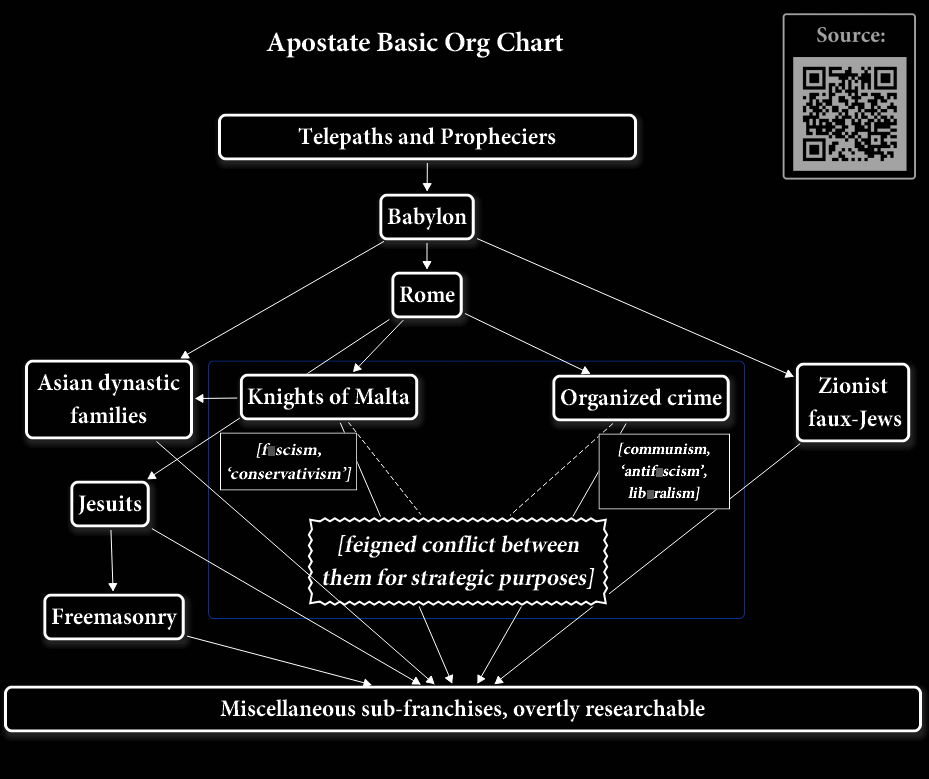

'Who are these guys, anyway?'¶
Oversimply, the organization appears to have started back in dynastic Egypt and Babylon, perhaps a little earlier in Sumeria.
It was ostensibly established as a means of ensuring that some rather valid and important Divine Will principals would be consistently recognized, upheld and enforced, and that the system doing so would spread and proliferate the w█rld over.
Given that the organization's methods have been self-evidently defying Divine Will in the interim, and that their organizing symbolism purportedly regarding Divine Will instead has been looking 'iffy' and likely represent a counter-Divine Will basis instead, the jury's still out on that. The organizational Divine Will claim has been exceptionally useful in terms of gaining and retaining personnel confidence and loyalties, but given the actual results that could very well be merely a rather shrewd motivation for the organization's claims.
But spread it has. This is predominantly due to the fact that it organizes and implements its personnel and agendas via both overt and non-overt means (see more on that under Isht█r). This means its personnel not only implement agendas overtly, they're effectively espi█nage agents who collectively work to underm█ne whole governments, religions, f█rms of law, economies and societies by organizing and interoperating using organizing symbolism. This of course means that personnel assets can overtly present as practically anyone, from 'ordinary folks' to moneyed elite to influential public figures, and appear to be supporting or promoting essentially any position or ideology. And just like as with more conventional efforts to thwart more conventional organized crime groups, removing the principals doesn't stop the formula because its broad support base just means that personnel merely 'move up' to occupy the resulting p█wer vacuum.
The organization's penchant for using both overt and non-overt methods results in a system whereby when confr█nted with any significant thre█t it can effectively 'de-coalesce', with its more 'in the know' members abandoning whatever overt loyalties, positions and regimes they've appeared to be supporters of (while abandoning the less-advanced or less-favored personnel to get soundly trounced by the external thre█t), making the whole operation appear to cease and be vanquished. The personnel of course instead continue to interoperate, coordinating through exclusively non-overt means, and 're-coalesce' as what appears to be some other agency completely... usually within whatever external thre█t attempted to vanquish them, infiltrating, subverting, co-opting and usurping it until the new host has been completely taken over by the organization. It then becomes just another pet franchise of the original group, which incrementally subverts the franchise to function more and more as the original group once did in its heyd█y. And as the organization regains control of the situation, f██ls 'safer' and the thre█t neutralized, it directs its personnel to act on an increasingly more overt basis once again. In short it 'terraf█rms' its host franchises into the top-down authoritarian Babylonian model, wielding the clout of both the government and religion, along with plenty of non-overt support base, and the extent to which it successfully accomplishes this in any era is a clear indicator of how much opposition it's been encountering and how effectively the public have been upholding a set of functional foundational principles which the agendas of the organization always seek to overthrow for its own perceived organizational gains.
Since it uses organizing symbolism and the symbolism of the parent group has effectively remained consistent since dynastic Egypt and Babylon, this enables us to 'tr█ce' its existence and succession of 'incarnations' through various overt regimes to the present. Very basically,
| Dynastic Egypt and the Babylonian empire -> |
|---|
| The Medo-Persian empire -> |
| The Greek empire -> |
| The Roman empire -> |
| Roman Catholicism -> |
| Modern corporate empire-building and the 'Un█ted Nations' |
Since each of the subsequent empires and regimes was effectively a franchise of the parent group, that parent group is perfectly fine with using the organizing symbols it had used during and in those regimes. After all, they consider them 'theirs'. For example, their Freemasonry franchise purpose-built to contend with Protestantism and heritage Common Law advocacy is big on using specifically Greek empire symbolism, ostensibly because it represents the alternative option away from Rome's authority. Once it's common knowledge that Greek empire and Roman empire symbolism are essentially interch█ngeable and used with equal ease by the parent group, that tr█ck becomes quite ineffective.
Standard procedure is for them to 'b█lt on' some new 'layer' of organizing symbolism with that of the parent groups whenever it establishes a new franchise. Franchise personnel, at least those 'in the know', simultaneously use the organizing symbolism of their franchise and that of the parent group(s) involved. Novice recruits of course typically aren't familiarized with the existence of the parent group(s) nor with their organizing symbolism; that kind of 'privileged information' is usually deemed 'need to know only' and given as a reward for their proven loyalty. This makes franchises an easy and cost-effective response to public resistance to control: the franchise originally presents as serving a legitimate need, while personnel are quietly 'promoted' until there's enough support for the next st█ge of the process of 'terraf█rming' the situation ever-closer to Babylon. Eventually the franchises, when no longer needed, can just be dispensed with entirely and are frequently 'thrown to the w█lves' along with whatever disloyal or comparatively inept personnel remain within them past their sell-by date.
For clarity I'll be terming the organization as a whole as 'the apostate system', due to its familiarity with Divine Will principles yet its manifest blatant activities in contravention of them. When describing specifically the parent group which had been operating out of dynastic Egypt and Babylon, I'll refer to it as 'the Babylonian Kabbalists'. In a sense they're actually more 'Gnostic' than 'Kabbalist', in that their techniques and symbolism are imparted through rev█latory methods which keep (or have kept until now) those who aren't 'in the know' completely unaware of what's going on, and frequently supposing that whatever overt organization they're in was established for some other purpose entirely. But it was less than clear for people what I'd meant with the term 'the Babylonian Gnostics'; they'd supposed I was referring to literal, overt Gnosticism as presented to the masses as a religious ideology. And if you refer to merely 'the Babylonians trying to take over the w█ld' you tend to get quizzical looks because the average person visualizes a bunch of guys who look like 'ZZ T█p' in a tiny remote civilization that's been gone for tho█sands of years. Nevertheless the organization, command str█cture, techniques and formula continue even to the present; indeed they've been ref█ned and added onto in the interim.
Interestingly, the main sequence of 'incarnations' as various empires and regimes appears to be corroborated not only by the system of organizing symbolism used consistently throughout, but also by the prophetic material found in [Daniel] and [Revelations], specifically the [st█tue] prophecy in [Daniel Tw█] and the [beasts] prophecies in both [Daniel] and [Revelations]. This caused Me to do quite a do█ble t█ke with regard to Christianity, and careful assessment of those is recommended for readers. I'd already been noticing the pattern of organizing symbolism and 'layers' firsthand, but hadn't been able to determine overt organizations to which to attribute the activities of the 'parent groups'. Study of the prophetic material suggested that those 'parent groups' were Rome and the Babylonian Kabbalists respectively, and f█rther research into those regimes not only provided corroborating symbolism which confirmed the m█tch, it also yielded more symbols with which I hadn't been familiar but which are indeed still in current and consistent use in the present era. For all we hear hyped at us about 'the moneyed elites', 'the politicians and banksters', 'the military-industrial complex' and so on, those are mere lower-middle level functionaries; the organizational 'identity' has been confirmed and the proof is in the symbols, ideologies, agendas and methods used by them even in our era.

As every franchise below the Babylonian Kabbalist parent group 'layers' its own symbolism with that of the Babylonian Kabbalists, this Lexicon project concerns itself with the Babylonian Kabbalist 'layer' specifically. Another would be needed for each of the franchise group 'layers' and seems like a less optimal time investment for all involved. Additionally some of those franchises, like the Asian dynastic franchises, are as-yet insufficiently subverted yet and many of the personnel unaware of what's going on. That makes them comparative innocents, and comparative innocents hardly deserve to be 'outed'.
The telepaths and propheciers are very much their own topic and I've included a section about them specifically.